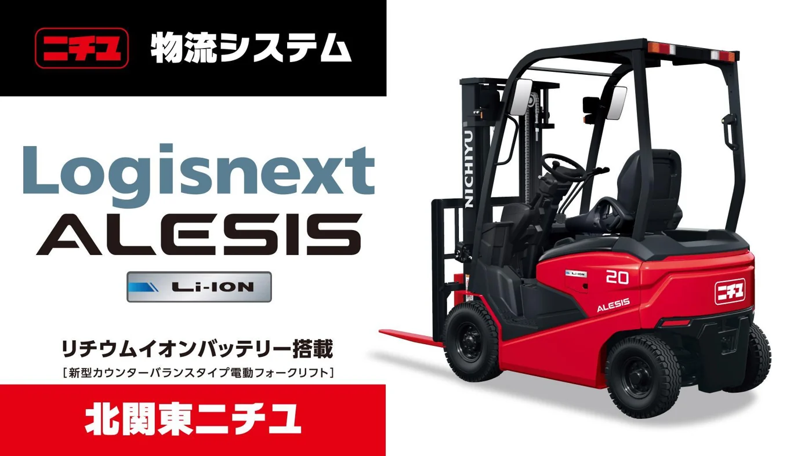

ニチユ
北関東ニチユ
ニチユ物流システム ｜
Logisnext
ALESIS
TOCHIGI SC
26/27
SEASON
PLAYERS
&
STAFF
GK
DF
MF
FW
STAFF
公式HP
TOP ▲
PAST SEASONS
過去の選手紹介
シーズンを選ぶ
2026 百年構想リーグ
2025
2024
2023
2022
2021
2020
2019
2018
2017
2016
2015
2014
2013
